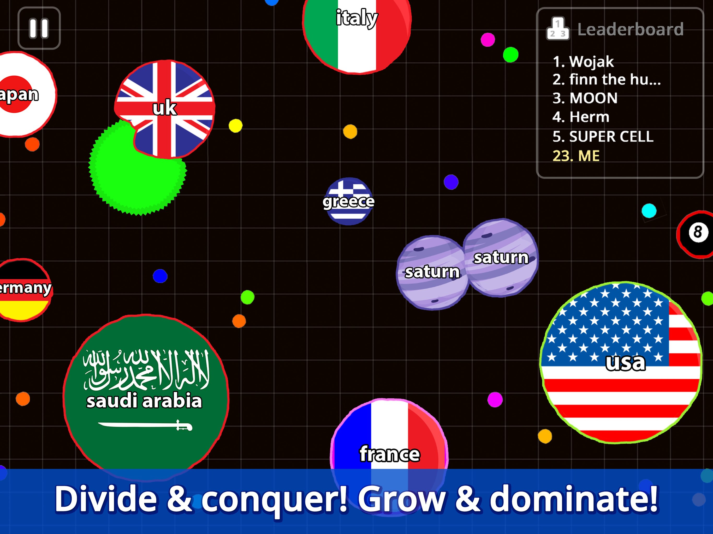

What is up, guys! Welcome back to the channel. Today, we are diving into the ultimate Agar.io debate. Everyone in the comments keeps arguing about the best way to dominate the leaderboard. Is it better to hoard mass and play it safe, or should you be splitting left and right to hunt down your enemies? I’ve spent the last 48 hours grinding on the master server, testing every single approach to see what actually works in the current meta. I’m not just giving you vague advice; I’m breaking down the exact growth speeds, survival tactics, and mechanical requirements for each method. If you want to stop getting eaten by viruses and start topping the charts, you need to see this final ranking. Let’s get right into it!

Agar.io in action
At a Glance
Rank
Name
Key Stats
Verdict
#1
The Mass Hoarder — The Slow Turtle
Growth caps out at massive sizes, often exceeding 10,000 mass. Movemen...
Safe, boring, and a giant walking target for anyone who...
#2
The Split Hunter — The Pop-Up Menace
Base movement speed remains high when under 2,000 mass. Splitting ejec...
High risk, high reward, and the only way to actually do...
#3
The Virus Camper — The Green Menace
Utilizes green spiky viruses that instantly split any cell larger than...
A brilliant defensive gimmick that completely falls apa...
#4
The Pellet Rusher — The Speed Demon
Maintains maximum movement speed by strictly staying under 500 mass. C...
Great for practicing dodging, but you'll never top the ...
The Contenders
The Mass Hoarder — The Slow Turtle
Growth caps out at massive sizes, often exceeding 10,000 mass. Movement speed drops significantly, losing roughly 30% of base speed as your mass increases, making you a sluggish target.
✨ When you hit 5,000 mass, you are an absolute unit. Nobody wants to fight you directly because one wrong move and they're gone. You can easily bully mid-sized players by just rolling over them. It’s the ultimate stress-free way to play if you just want to watch your score tick up. You dominate the early game pellet rush and naturally intimidate smaller cells into giving you their mass without a fight.
✨ The moment you get big, you become a massive target. Split hunters will absolutely feast on you because your slow speed makes you an easy snack. If a virus gets pushed into you, you shatter into dozens of tiny pieces and lose all your hard-earned progress in seconds. You also completely miss out on the fast-paced action, making the game feel like a boring waiting simulator until someone makes a mistake.
Safe, boring, and a giant walking target for anyone who knows how to split.
The Split Hunter — The Pop-Up Menace
Base movement speed remains high when under 2,000 mass. Splitting ejects half your mass forward up to 10 screen lengths away, but leaves your cells separated until they naturally merge.
✨ This is the most aggressive and rewarding playstyle in the game. By constantly popping out to eat smaller cells, you snowball your score faster than any other method. You control the pace of the match. When you spot a distracted Mass Hoarder, a well-timed double split can instantly wipe them out and double your score in a single second. It keeps you sharp, forces opponents to panic, and guarantees you’ll be in the top 3 if your aim is good.
✨ It requires absolute map awareness. If you miss your split, or if your target dodges, you are now tiny and completely defenseless. Bigger players will just eat your ejected mass and laugh at you. You also have to manage your merge timers perfectly; if you get chased while your pieces are still separated, you will get picked off one by one. One bad engage can reset your entire game.
High risk, high reward, and the only way to actually dominate the leaderboard.
How they stack up
The Virus Camper — The Green Menace
Utilizes green spiky viruses that instantly split any cell larger than them upon contact. Requires staying within a tight 2-screen radius of a virus, sacrificing map mobility for localized defense.
✨ This is the ultimate counter to the Split Hunter. By positioning yourself just behind a virus, you create an inescapable trap. When a massive player tries to eat you, they pop the virus and shatter into pieces, allowing you to clean up their remains. It requires zero mechanical skill, just pure spatial awareness and patience. You turn the map’s environmental hazards into your personal bodyguards, making you virtually untouchable by anyone who doesn't bring a team to feed you through the virus.
✨ You are completely stationary. While you're camping one virus, other players are eating all the pellets in the rest of the map. Your growth rate is painfully slow because you aren't actively hunting. If a team of players decides to coordinate and feed the virus into you, you get split and eaten instantly. It’s a highly passive strategy that relies entirely on other players making dumb mistakes and running into your trap.
A brilliant defensive gimmick that completely falls apart against coordinated teams.
The Pellet Rusher — The Speed Demon
Maintains maximum movement speed by strictly staying under 500 mass. Can utilize the Speed Boost power-up to temporarily increase velocity, maximizing pellet collection without getting weighed down.
✨ You are untouchable. Because you refuse to eat players and only focus on pellets and speed boosts, your movement speed stays at 100% of the base cap. You can dart around the map, dodging massive cells by mere pixels. This style is incredibly frustrating to play against because bigger cells can never catch you. It’s the perfect way to learn map awareness and practice your dodging mechanics. When you finally decide to strike, you have the momentum to outmaneuver anyone.
✨ You never actually get big. While you’re dodging around the edges, the Split Hunters and Mass Hoarders are racking up millions of points. You can’t win the game just by surviving; eventually, you need to take risks to grow. If you get cornered in a tight space or trapped against a wall by a smart opponent, your speed advantage means nothing. You are essentially playing a different, much slower game while everyone else is actually competing.
Great for practicing dodging, but you'll never top the leaderboard playing scared.
The Rankings
#1 The Mass HoarderRank 1 of 4
#2 The Split HunterRank 2 of 4
#3 The Virus CamperRank 3 of 4
#4 The Pellet RusherRank 4 of 4
Alright, let’s get to the definitive ranking. Starting at the bottom at number four, we have The Pellet Rusher. Look, dodging is fun, but if you aren't growing, you aren't winning. It’s a coward’s strategy that guarantees you’ll be stuck in the middle of the pack. Coming in at number three is The Virus Camper. It’s a neat trick for beginners, but it’s completely overrated. The moment you face a team that knows how to feed viruses, you’re dead meat. It’s too passive for a game that rewards aggression. At number two, we have The Mass Hoarder. I know a lot of you love getting big, but being a slow turtle is a trap. You work hard for 20 minutes just to get split into a million pieces by a guy with good aim. Taking the crown at number one is The Split Hunter. This is the undisputed king of Agar.io. It’s the only playstyle that actually controls the game’s pace. If you master your split timing, you will absolutely dominate the server.
Who Should Pick What
If you're a beginner learning the controls
Go Pellet Rusher
Focus purely on eating pellets and dodging. It removes the stress of fighting bigger cells while you learn how to use the mouse and understand the game's physics without getting instantly eaten.
If you love high-action aggression
Pick the Split Hunter
This is your bread and butter. Constantly popping splits to hunt down mid-sized cells will keep your adrenaline pumping. Just remember to watch your merge timers so you don't get punished for overextending.
If you play defensively and hate losing progress
Try the Virus Camper
Hide behind the green spiky viruses and let the aggressive players make mistakes. It’s a low-stress way to survive longer and pick off the remnants of players who shatter themselves on the viruses.
The final verdict in action
The Bottom Line
At the end of the day, Agar.io is a game about momentum, and the Split Hunter is the only playstyle that generates it consistently. Camping viruses or hoarding mass might feel safe, but safety doesn't put you at the top of the leaderboard. You have to take risks, manage your split cooldowns, and actively hunt your food. If you want my absolute best advice: stop playing scared. Embrace the Split Hunter, practice your aim, and start taking down the big guys. It’s the hardest style to master, but it is hands down the most rewarding and the only true way to conquer the server.